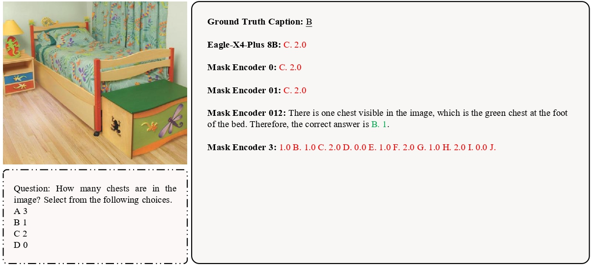

Investigating Redundancy in Multimodal Large Language Models with Multiple Vision Encoders
Motivation
There are two primary strategies to enhance the perception capabilities of MLLMs:
- Improve a single encoder: Increase parameters, fuse features across layers, etc.
- Integrate multiple encoders: Combine encoders to potentially capture complementary visual signals.
This work investigates the second approach—exploring the efficiency and effectiveness of multi-encoder MLLMs.
Notably, the aggregate performance of multi-encoder MLLMs is often not simply the sum of individual encoder capabilities.
Case Study
Masking a task-critical encoder can dramatically alter model outputs—demonstrating that multi-encoder MLLMs may depend heavily on specific encoders for certain tasks. Below, we show examples using Eagle-X4 8B Plus with and without selected encoders:
Case study 1.
Case study 2.
As these examples show, some encoders are redundant—ablating them often maintains model performance.
This observation raises several questions: How robust are multi-encoder MLLMs to encoder masking? How gracefully does performance degrade, and how can we quantify redundancy in these architectures?
Method
What architectures do we study?
We focus on the widely adopted “ViT-adapter-LLM” family of multi-encoder MLLMs. As illustrated below: given an input image $I$ and prompt $T$, a model with vision encoders $\mathcal{E}_n = \{E_1,\dots,E_n\}$ produces an output $Y$ as follows:
Here, $\mathrm{fusion}(\cdot)$ refers to feature integration strategies such as concatenation or attention, and $\mathrm{proj}(\cdot)$ aligns visual features to the LLM’s embedding space via an adapter.
The studied models include
Eagle,
Cambrian-1,
I-MoF,
Eagle2,
DeepSeek-VL.
How can we quantify encoder redundancy?
To rigorously assess how individual encoders contribute—and overlap—within a multi-encoder MLLM, we introduce two intuitive and complementary metrics:
the Conditional Utilization Rate (CUR) and the Information Gap (IG).
-
Conditional Utilization Rate (CUR):
CUR measures the unique value provided by each encoder. For encoder $E_i$, it is calculated as:$$ u(E_i) = \frac{\mathrm{acc}\big(f_{\mathcal{E}_n}\big) - \mathrm{acc}\big(f_{\mathcal{E}_n \setminus \{E_i\}}\big)}{\mathrm{acc}\big(f_{\mathcal{E}_n}\big)} $$Here, $f_{\mathcal{E}_n}$ denotes the model with all encoders, while $f_{\mathcal{E}_n \setminus \{E_i\}}$ is the model with $E_i$ masked. A high $u(E_i)$ means $E_i$ is essential and uniquely valuable; values near zero indicate redundancy; negative values signal that an encoder may even harm overall performance. -
Information Gap (IG):
IG reflects how evenly the encoders contribute to the model. For a set of encoders $\mathcal{E}_n$:$$ \Delta_{\mathrm{gap}}(\mathcal{E}_n) = \max_{i \in \{1,\dots,n\}} u(E_i)\ -\ \min_{j \in \{1,\dots,n\}} u(E_j) $$A small $\Delta_{\mathrm{gap}}$ indicates balanced contributions among encoders, while a large gap points to significant imbalance—where some encoders dominate the model’s performance.
Together, CUR and IG provide a clear, principled framework for diagnosing redundancy versus specialization among encoders in multi-encoder architectures.
How is performance measured?
We rigorously evaluate these multi-encoder MLLMs using a suite of benchmarks from VLMEvalKit, a comprehensive toolkit covering a wide range of multimodal LLM tasks. This ensures robust, standardized comparison across models and settings.
Benchmarks used in evaluation:
| Category | Benchmark | Metric | Remark |
|---|---|---|---|
| General | GQA[1] | Accuracy | |
| MMB[2] | Accuracy | ||
| MME[3] | Score | Perception score / 20 | |
| SEED-I[4] | Accuracy | ||
| Knowledge | AI2D[5] | Accuracy | |
| MathVista[6] | Score | ||
| SQA-I[7] | Accuracy | ||
| MMMU[8] | Accuracy | ||
| OCR & Chart | DocVQA[9] | Accuracy | |
| ChartQA[10] | Accuracy | ||
| OCRBench[11] | Score | Score / 10 | |
| TextVQA[12] | Accuracy | ||
| Vision-Centric | CV-Bench[13] | Accuracy | |
| MMVP[14] | Accuracy | ||
| Real World QA[15] | Accuracy |
Key Results
1. Pervasive Encoder Redundancy
Across representative multi-encoder MLLMs (Eagle, Cambrian-1, I-MoF, Eagle2, DeepSeek-VL), performance degrades gracefully—and sometimes improves—when encoders are masked, showing that additional encoders often yield diminishing returns. Below: (left) overall performance vs. number of masked encoders; (right) Conditional Utilization Rate (CUR) by benchmark category—strong specialization on OCR & Chart vs. high redundancy on General and Knowledge.
Performance with different numbers of masked encoders (Max / Min / Mean over subsets).
CUR by category: higher CUR = stronger dependence on that encoder; negative CUR = detrimental.
2. Efficiency and Performance: Re-trained vs. Original
Re-training with fewer encoders preserves most accuracy while substantially reducing cost. For Eagle-X5 7B, a dual-encoder variant (Eagle-X2 7B) reaches 94% of the full model’s performance while cutting total training time by 34% (on 8× A100). At inference, masking three encoders reduces latency by 19.5% with <4% performance drop. Vision-side FLOPs drop to 61.4% when keeping only two encoders; dual-encoder variants consistently recover >90% of baseline on most non-OCR tasks with lower training and inference cost.
| Aspect | Re-trained dual-encoder (e.g. Eagle-X2 7B) vs. full model |
|---|---|
| Performance | ≥94% of full model |
| Training time | ~34% reduction |
| Inference latency | ~19.5% reduction (when masking 3 encoders) |
| Vision FLOPs | 61.4% of full model |
Conclusion & Takeaways
Our systematic study reveals that most current multi-encoder MLLMs exhibit substantial redundancy, especially on general-knowledge benchmarks. While multiple encoders offer some specialization—most notably for OCR and chart tasks—models can often be simplified (by masking or re-training with fewer encoders) with only a modest drop in overall accuracy. This yields significant efficiency gains in training and inference, with dual-encoder variants retaining >90% of the full model’s performance outside the most vision-centric domains.
- Encoder redundancy is evident: for general benchmarks, a single encoder is sufficient; for more complex or vision-centric scenarios, two encoders suffice—adding additional encoders brings little or no improvement.
- Language-aligned and image-trained encoders do not show any significant difference in overall results.
- Eliminating extra encoders and re-training the model notably improves efficiency while maintaining high performance.
BibTeX
@inproceedings{
wang2026investigating,
title={Investigating Redundancy in Multimodal Large Language Models with Multiple Vision Encoders},
author={Yizhou Wang and Song Mao and Yang Chen and Yufan Shen and Pinlong Cai and Ding Wang and Guohang Yan and Zhi Yu and Yinqiao Yan and Xuming Hu and Botian Shi},
booktitle={The Fourteenth International Conference on Learning Representations},
year={2026},
url={https://openreview.net/forum?id=cAopJVLKvi}
}